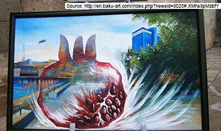
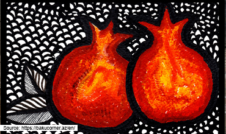

在巴庫，藝術體驗

受惠於千禧年後亞塞拜然國力的飛速增長，巴庫的現代藝術得以如日中天，全世界的藝術家也被吸引來這裡發展。
不要錯過城內的博物館和畫廊。 亞塞拜然國家美術館和亞塞拜然地毯博物館都是妳藝術之旅的首選。
巴庫角

妳可以在巴庫的周遭發現 “巴庫角”，這是一個以慈善為基本目的的市場品牌。
如果需要挑選紀念品，巴庫角的商品是非常適合的。除了傳統的亞塞拜然女性頭飾，還有當地風格的現代設計品，比如手袋、珠寶甚至價格親民的手機殼都有。這些都是由本地設計師和藝術家合作制作而成，非常具有當地的文化風格。